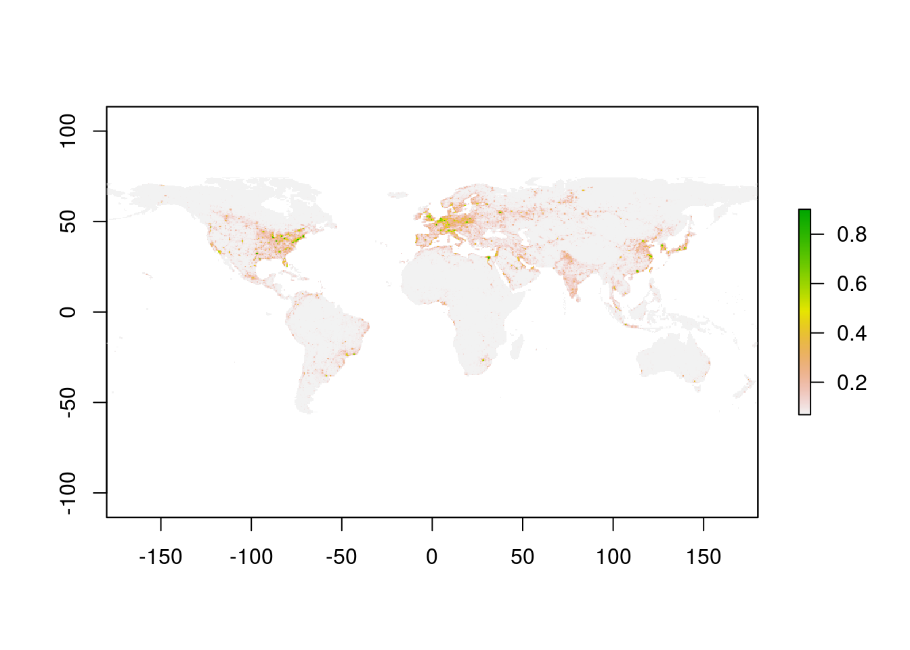
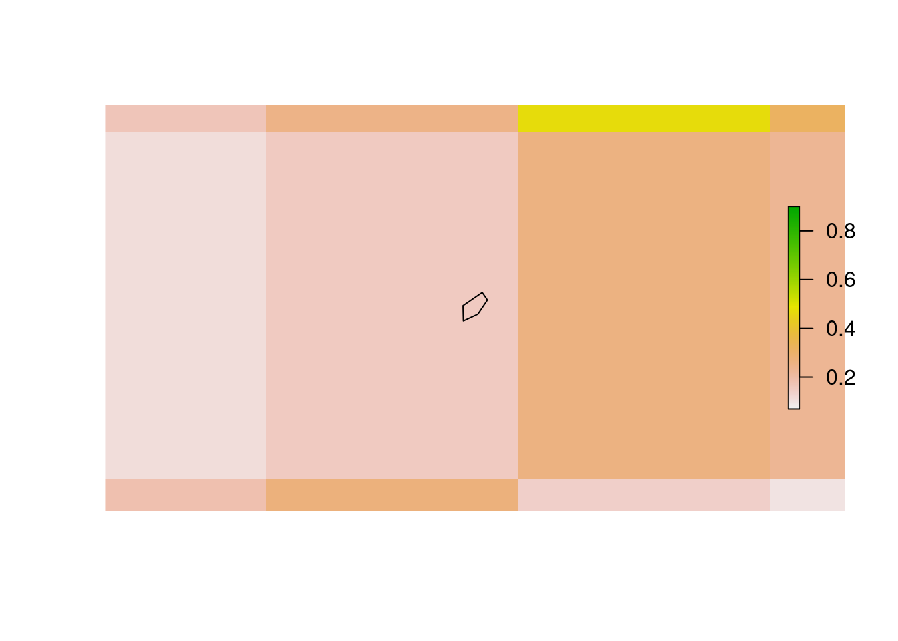
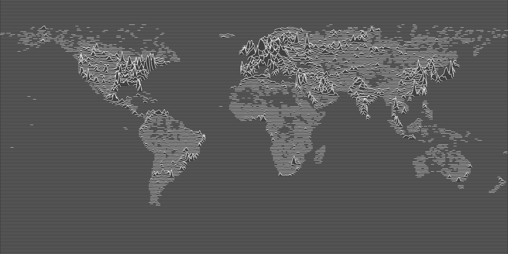

velox offers fast methods for extracting and summarizing raster data at the locations of spatial objects, that is, polygons, lines, or points.
In the following, we demonstrate velox’s extract functionality using some of the nightlight emission data available in the PRIO GRID data set. The pgrid R package provides a convenient way to return PRIO GRID data in VeloxRaster format:
library(pgrid)
prio.ls <- getPrioRaster(names = 'nlights_calib_mean', years = c(2010:2012))
prio.vx <- prio.ls$raster
priometa.df <- prio.ls$metaLet’s plot the 2010 nightlight data:
library(raster)
nl10.ras <- prio.vx$as.RasterLayer(priometa.df$band[priometa.df$year == 2010])
plot(nl10.ras)
We first illustrate value extraction using polygon data. To this end, we use the territory of souvereign states in 2010, as provided through the cshapes package:
library(cshapes)
world.spdf <- cshp(as.Date('2010-01-01'))Now let’s extract all raster values for a single country, e.g. Syria, using the VeloxRaster_extract method.
syria.spdf <- world.spdf[world.spdf$CNTRY_NAME == 'Syria',]
extr.ls <- prio.vx$extract(sp = syria.spdf)
head(extr.ls[[1]])## [,1] [,2] [,3]
## [1,] 0.1835138 0.1945672 0.1766599
## [2,] 0.1624745 0.1517049 0.1036100
## [3,] 0.1856766 0.1767696 0.1355223
## [4,] 0.1240347 0.1188611 0.1146748
## [5,] 0.2964082 0.2870667 0.2427285
## [6,] 0.3074953 0.3080959 0.2350021By default, VeloxRaster_extract returns a list with one element per entry in the input Spatial* data frame, and each element consisting of a matrix of raster values. Here the matrix has three columns because prio.vx consists of three raster bands.
Often we don’t want ‘raw’ raster values, but summaries thereof. VeloxRaster_extract permits passing an R function for summarizing the raster values before returning them. In the following, we request the arithmetic mean. Note that we set na.rm = TRUE in order to handle NA values in the raster data.
nlmean.mat <- prio.vx$extract(sp = syria.spdf, fun = function(x) mean(x, na.rm = TRUE))
print(nlmean.mat)## [,1] [,2] [,3]
## 224 0.1199454 0.1164759 0.1028327By default, VeloxRaster_extract determines whether a raster cell intersects with a polygon by testing whether its center intersects with the polygon. For small or oddly shaped polygons, this may lead to VeloxRaster_extract returning NA values. Consider the case of Monaco for illustration:
library(rgeos)
monaco.spdf <- world.spdf[world.spdf$CNTRY_NAME == 'Monaco',]
plot(gEnvelope(gBuffer(monaco.spdf, width = 0.25))) # Set plotting area
plot(prio.vx$as.RasterLayer(1), add = TRUE)
plot(monaco.spdf, add = TRUE)
Here, running VeloxRaster_extract returns NA:
monaco.mat <- prio.vx$extract(sp = monaco.spdf, fun = function(x) mean(x, na.rm = TRUE))
print(monaco.mat)## [,1] [,2] [,3]
## 72 NA NA NATo avoid this problem we set small = TRUE in VeloxRaster_extract. Doing so forces velox to look for full polygon-raster-cell overlaps for those polygons that do not intersect with a raster centroid:
monaco.mat <- prio.vx$extract(sp = monaco.spdf, fun = function(x) mean(x, na.rm = TRUE), small = TRUE)
print(monaco.mat)## [,1] [,2] [,3]
## 72 0.149217 0.1167527 0.1177678Raster value extraction for lines works equivalently to the polygon case. Note, however, that for line geometries, velox always tests for intersections with the full raster-cells, not just the centroids. As an illustration, consider the following SpatialLinesDataFrame, which consists one line per parallel (i.e. one line at latitude 89.5, one at 88.5, etc).
## Make latitude lines
latVec <- seq(from = 89.5, to = -89.5, by = -1)
Lns.ls <- list()
for (lat in latVec) {
coords <- matrix(c(-180, lat,
180, lat), 2, 2, byrow = TRUE)
Lns <- Lines(list(Line(coords)), paste(lat))
Lns.ls[[length(Lns.ls)+1]] <- Lns
}
lat.sldf <- SpatialLinesDataFrame(SpatialLines(Lns.ls), data.frame(id = 1:length(Lns.ls)), match.ID = F)We now extract raster values from a 1x1 decimal degree version of PRIO GRID using these lines.
## Aggregate PRIO GRID
prio.agg.vx <- prio.vx$copy()
prio.agg.vx$aggregate(factor = 2, aggtype = 'sum')
## Extract raster values
lineval.ls <- prio.agg.vx$extract(sp = lat.sldf)
print(dim(lineval.ls[[1]]))## [1] 360 3The returned matrices have 360 rows because the intersect with all 180*2 raster cells on each parallel. Incidentally, we can use these data to create a neat line map (as inspired by this blog post).
## Raster cell x vector
xVec <- seq(from = -179.5, to = 179.5, by = 1)
## Get a list of only 2010 nightlight data
nl2010.ls <- lapply(lineval.ls, function(x) x[,1])
## Get the minimal nightlight value observed (so we can normalize)
nl.min <- min(unlist(lapply(nl2010.ls, function(x) min(x, na.rm = TRUE))))
## Empty plot
par(mar = c(0,0,0,0), bg = grey(0.25), xaxs = "i", yaxs = "i")
plot(1, type="n", xlab="", ylab="", xlim=c(-180,180), ylim=c(-90, 90), axes=FALSE, bty="n")
## Iterate over parallels
for (i in 1:length(nl2010.ls)) {
## Get nightlights at this parallel
val <- nl2010.ls[[i]] - nl.min
## Replace NAs with zero, multiply with constant (to make variance more visible)
val[is.na(val)] <- 0
val <- val * 5
# Mark (non-zero) segments
counter <- 1
segmentVec <- rep(0, length(val))
segmentVec[1] <- ifelse(val[1] == 0, 0, counter)
for (j in 2:length(val)) {
if (val[j-1] == 0 & val[j] != 0) {
counter <- counter+1
segmentVec[j] <- counter
} else if (val[j] != 0) {
segmentVec[j] <- counter
}
}
# Add lat to val
val <- val + latVec[i]
# Plot full parallel in grey
points(xVec, val, type = 'l', lwd = 1, col = grey(0.5))
# Plot polygon for each segment
segments <- unique(segmentVec[segmentVec != 0])
if (length(segments) > 0) {
for (s in segments) {
thisXVec <- xVec[segmentVec == s]
thisYVec <- val[segmentVec == s]
# Plot polygon
if (length(thisXVec) > 1) {
polygon(c(min(thisXVec)-1, thisXVec, max(thisXVec)+1),
c(latVec[i], thisYVec, latVec[i]),
col=grey(0.25), border = NA)
}
# Plot polygon contour in white
points(c(min(thisXVec)-1, thisXVec, max(thisXVec)+1),
c(latVec[i], thisYVec, latVec[i]),
type = 'l', lwd = 1, col = 'white')
}
}
}
Extracting raster values at the location of points is possible using the VeloxRaster_extract_points method. As a demonstration, let’s create some random point data:
## Some random point data
set.seed(0)
points.sp <- SpatialPoints(cbind(runif(100, -180, 180), runif(100, -90, 90)))Extracting the respective raster values:
## Extract raster values at points
pval.mat <- prio.vx$extract_points(sp = points.sp)
print(dim(pval.mat))## [1] 100 3The VeloxRaster_extract method is fully interoperable with the sf package:
require(sf)
## Cast syria.spdf as sf object
syria.sf <- st_as_sf(x = syria.spdf)
## Use extract as before
extr.ls <- prio.vx$extract(sp = syria.sf)
head(extr.ls[[1]])## [,1] [,2] [,3]
## [1,] 0.1835138 0.1945672 0.1766599
## [2,] 0.1624745 0.1517049 0.1036100
## [3,] 0.1856766 0.1767696 0.1355223
## [4,] 0.1240347 0.1188611 0.1146748
## [5,] 0.2964082 0.2870667 0.2427285
## [6,] 0.3074953 0.3080959 0.2350021Similarly, the VeloxRaster_extract_points method also works on sf objects storing POINT data:
## Cast random points as sf object
points.sf <- st_as_sf(x = points.sp)
## Use extract_points as before
pval.mat <- prio.vx$extract_points(sp = points.sf)
print(dim(pval.mat))## [1] 100 3VeloxRaster_extract_points does not (yet) work with sf data of type MULTIPOINT, however.